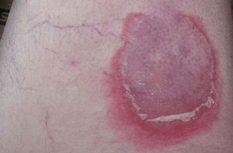
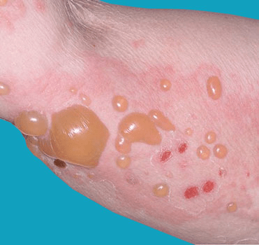

Pemphigoid is a rare autoimmune disorder that can develop at any age, including
in kids, but that most often affects the elderly. Pemphigoid is caused by a malfunction
of the immune system and results in skin rashes and blistering on the legs, arms, and abdomen.
Pemphigoid can also cause blistering on the mucous membranes. Mucous membranes
produce mucous that helps protect the inside of your body. Pemphigoid can be found
on the mucous membranes in your eyes, nose, mouth, and genitals. It can also occur
during pregnancy in some women.
There’s no cure for pemphigoid, but there are various treatment options.


The most common symptom of pemphigoid is blistering that occurs on the arms, legs, abdomen, and mucous membranes. Hives and itching are also common. The blisters have certain characteristics, regardless of where on the body they form:
No.
No. Treatment helps a lot, but controls the condition rather than curing it completely. However, pemphigoid does often go away by itself after one to five years.